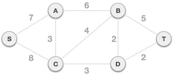
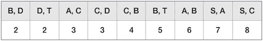
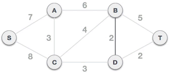
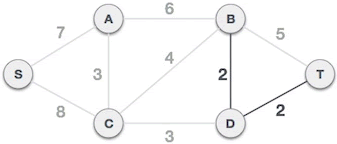
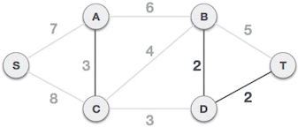
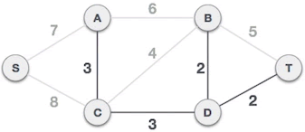
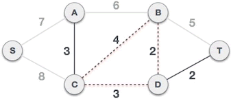
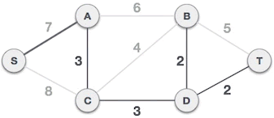
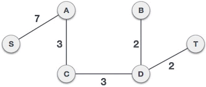

首页 > 编程笔记
kruskal算法（克鲁斯卡尔算法）详解
在连通网中查找最小生成树的常用方法有两个，分别称为普里姆算法和克鲁斯卡尔算法。本节，我们给您讲解克鲁斯卡尔算法。
克鲁斯卡尔算法查找最小生成树的方法是：将连通网中所有的边按照权值大小做升序排序，从权值最小的边开始选择，只要此边不和已选择的边一起构成环路，就可以选择它组成最小生成树。对于 N 个顶点的连通网，挑选出 N-1 条符合条件的边，这些边组成的生成树就是最小生成树。
举个例子，图 1 是一个连通网，克鲁斯卡尔算法查找图 1 对应的最小生成树，需要经历以下几个步骤：
1) 将连通网中的所有边按照权值大小做升序排序：
2) 从 B-D 边开始挑选，由于尚未选择任何边组成最小生成树，且 B-D 自身不会构成环路，所以 B-D 边可以组成最小生成树。
3) D-T 边不会和已选 B-D 边构成环路，可以组成最小生成树：
4) A-C 边不会和已选 B-D、D-T 边构成环路，可以组成最小生成树：
5) C-D 边不会和已选 A-C、B-D、D-T 边构成环路，可以组成最小生成树：
6) C-B 边会和已选 C-D、B-D 边构成环路，因此不能组成最小生成树：
7) B-T 、A-B、S-A 三条边都会和已选 A-C、C-D、B-D、D-T 构成环路，都不能组成最小生成树。而 S-A 不会和已选边构成环路，可以组成最小生成树。
8) 如图 7 所示，对于一个包含 6 个顶点的连通网，我们已经选择了 5 条边，这些边组成的生成树就是最小生成树。
举个例子，在上面的图 4 中，已选择的边为 A-C、B-D、D-T，接下来要判断 C-D 边是否可以组成最小生成树。对于已经选择的边，B-D 和 D-T 直接相邻，所以 B、D、T 的标记相同（假设为 1），A-C 边两端顶点的标记也相同（假设为 2）。判断 C-D 边是否可以组成最小生成树，由于 C、D 的标记不同（1 ≠ 2），所以可以组成最小生成树。C-D 作为新选择的边，与它相连的已选边有 A-C、B-D、D-T，所以要将 A、C、D、B、T 改为相同的标记。
再比如说，在图 5 的基础上判断 C-B 是否可以组成最小生成树。由上面例子的分析结果得知，C、B 两个顶点的标记相同，因此 C-B 边会和其它已选边构成环路，不能组成最小生成树（如图 6 所示）。
如下是用克鲁斯卡尔算法在图 1 所示的连通网中查找最小生成树的 C 语言程序：
用克鲁斯卡尔算法在图 1 所示的连通网中查找最小生成树的 Java 程序：
用克鲁斯卡尔算法在图 1 所示的连通网中查找最小生成树的 Python 程序：
将图 1 中的 A、B、C、D、S、T 顶点分别用数字 1~6 表示，上面程序的执行结果均为：
克鲁斯卡尔算法查找最小生成树的方法是：将连通网中所有的边按照权值大小做升序排序，从权值最小的边开始选择，只要此边不和已选择的边一起构成环路，就可以选择它组成最小生成树。对于 N 个顶点的连通网，挑选出 N-1 条符合条件的边，这些边组成的生成树就是最小生成树。
举个例子，图 1 是一个连通网，克鲁斯卡尔算法查找图 1 对应的最小生成树，需要经历以下几个步骤：

图 1 连通网
图 1 连通网
1) 将连通网中的所有边按照权值大小做升序排序：

2) 从 B-D 边开始挑选，由于尚未选择任何边组成最小生成树，且 B-D 自身不会构成环路，所以 B-D 边可以组成最小生成树。

图 2 B-D 边组成最小生成树
图 2 B-D 边组成最小生成树
3) D-T 边不会和已选 B-D 边构成环路，可以组成最小生成树：

图 3 D-T 边组成最小生成树
图 3 D-T 边组成最小生成树
4) A-C 边不会和已选 B-D、D-T 边构成环路，可以组成最小生成树：

图 4 A-C 边组成最小生成树
图 4 A-C 边组成最小生成树
5) C-D 边不会和已选 A-C、B-D、D-T 边构成环路，可以组成最小生成树：

图 5 C-D 边组成最小生成树
图 5 C-D 边组成最小生成树
6) C-B 边会和已选 C-D、B-D 边构成环路，因此不能组成最小生成树：

图 6 C-B 边不能组成最小生成树
图 6 C-B 边不能组成最小生成树
7) B-T 、A-B、S-A 三条边都会和已选 A-C、C-D、B-D、D-T 构成环路，都不能组成最小生成树。而 S-A 不会和已选边构成环路，可以组成最小生成树。

图 7 S-A 边组成最小生成树
图 7 S-A 边组成最小生成树
8) 如图 7 所示，对于一个包含 6 个顶点的连通网，我们已经选择了 5 条边，这些边组成的生成树就是最小生成树。

图 8 最小生成树
图 8 最小生成树
克鲁斯卡尔算法的具体实现
实现克鲁斯卡尔算法的难点在于“如何判断一个新边是否会和已选择的边构成环路”，这里教大家一种判断的方法：初始状态下，为连通网中的各个顶点配置不同的标记。对于一个新边，如果它两端顶点的标记不同，就不会构成环路，可以组成最小生成树。一旦新边被选择，需要将它的两个顶点以及和它直接相连的所有已选边两端的顶点改为相同的标记；反之，如果新边两端顶点的标记相同，就表示会构成环路。举个例子，在上面的图 4 中，已选择的边为 A-C、B-D、D-T，接下来要判断 C-D 边是否可以组成最小生成树。对于已经选择的边，B-D 和 D-T 直接相邻，所以 B、D、T 的标记相同（假设为 1），A-C 边两端顶点的标记也相同（假设为 2）。判断 C-D 边是否可以组成最小生成树，由于 C、D 的标记不同（1 ≠ 2），所以可以组成最小生成树。C-D 作为新选择的边，与它相连的已选边有 A-C、B-D、D-T，所以要将 A、C、D、B、T 改为相同的标记。
再比如说，在图 5 的基础上判断 C-B 是否可以组成最小生成树。由上面例子的分析结果得知，C、B 两个顶点的标记相同，因此 C-B 边会和其它已选边构成环路，不能组成最小生成树（如图 6 所示）。
如下是用克鲁斯卡尔算法在图 1 所示的连通网中查找最小生成树的 C 语言程序：
#include <stdio.h>
#include <stdlib.h>
#define N 9 // 图中边的数量
#define P 6 // 图中顶点的数量
//构建表示边的结构体
struct edge {
//一条边有 2 个顶点
int initial;
int end;
//边的权值
int weight;
};
//qsort排序函数中使用，使edges结构体中的边按照权值大小升序排序
int cmp(const void* a, const void* b) {
return ((struct edge*)a)->weight - ((struct edge*)b)->weight;
}
//克鲁斯卡尔算法寻找最小生成树，edges 存储用户输入的图的各个边，minTree 用于记录组成最小生成树的各个边
void kruskal_MinTree(struct edge edges[], struct edge minTree[]) {
int i, initial, end, elem, k;
//每个顶点配置一个标记值
int assists[P];
int num = 0;
//初始状态下，每个顶点的标记都不相同
for (i = 0; i < P; i++) {
assists[i] = i;
}
//根据权值，对所有边进行升序排序
qsort(edges, N, sizeof(edges[0]), cmp);
//遍历所有的边
for (i = 0; i < N; i++) {
//找到当前边的两个顶点在 assists 数组中的位置下标
initial = edges[i].initial - 1;
end = edges[i].end - 1;
//如果顶点位置存在且顶点的标记不同，说明不在一个集合中，不会产生回路
if (assists[initial] != assists[end]) {
//记录该边，作为最小生成树的组成部分
minTree[num] = edges[i];
//计数+1
num++;
elem = assists[end];
//将新加入生成树的顶点标记全部改为一样的
for (k = 0; k < P; k++) {
if (assists[k] == elem) {
assists[k] = assists[initial];
}
}
//如果选择的边的数量和顶点数相差1，证明最小生成树已经形成，退出循环
if (num == P - 1) {
break;
}
}
}
}
void display(struct edge minTree[]) {
int cost = 0, i;
printf("最小生成树为:\n");
for (i = 0; i < P - 1; i++) {
printf("%d-%d 权值：%d\n", minTree[i].initial, minTree[i].end, minTree[i].weight);
cost += minTree[i].weight;
}
printf("总权值为：%d", cost);
}
int main() {
int i;
struct edge edges[N], minTree[P - 1];
for (i = 0; i < N; i++) {
scanf("%d %d %d", &edges[i].initial, &edges[i].end, &edges[i].weight);
}
kruskal_MinTree(edges, minTree);
display(minTree);
return 0;
}
用克鲁斯卡尔算法在图 1 所示的连通网中查找最小生成树的 Java 程序：
import java.util.Arrays;
import java.util.Scanner;
public class prim {
static int N = 9; // 图中边的数量
static int P = 6; // 图中顶点的数量
//构建表示路径的类
public static class edge implements Comparable<edge>{
//每个路径都有 2 个顶点和 1 个权值
int initial;
int end;
int weight;
public edge(int initial, int end, int weight) {
this.initial = initial;
this.end = end;
this.weight = weight;
}
//对每个 edge 对象根据权值做升序排序
@Override
public int compareTo(edge o) {
return this.weight - o.weight;
}
}
public static void kruskal_MinTree(edge[] edges,edge [] minTree) {
int []assists = new int[P];
//每个顶点配置一个不同的标记值
for (int i = 0; i < P; i++) {
assists[i] = i;
}
//根据权值，对所有边进行升序排序
Arrays.sort(edges);
//遍历所有的边
int num = 0;
for (int i = 0; i < N; i++) {
//找到当前边的两个顶点在 assists 数组中的位置下标
int initial = edges[i].initial - 1;
int end = edges[i].end - 1;
//如果顶点位置存在且顶点的标记不同，说明不在一个集合中，不会产生回路
if (assists[initial] != assists[end]) {
//记录该边，作为最小生成树的组成部分
minTree[num] = edges[i];
//计数+1
num++;
int elem = assists[end];
//将新加入生成树的顶点标记全不更改为一样的
for (int k = 0; k < P; k++) {
if (assists[k] == elem) {
assists[k] = assists[initial];
}
}
//如果选择的边的数量和顶点数相差1，证明最小生成树已经形成，退出循环
if (num == P - 1) {
break;
}
}
}
}
public static void display(edge [] minTree) {
System.out.println("最小生成树为：");
int cost = 0;
for (int i = 0; i < P - 1; i++) {
System.out.println(minTree[i].initial+" - "+ minTree[i].end+" 权值为："+minTree[i].weight);
cost += minTree[i].weight;
}
System.out.print("总权值为:"+cost);
}
public static void main(String[] args) {
Scanner scn = new Scanner(System.in);
edge[] edges = new edge[N];
edge[] minTree = new edge[P-1];
System.out.println("请输入图中各个边的信息：");
for(int i=0;i<N;i++) {
int initial = scn.nextInt(), end = scn.nextInt(), weight = scn.nextInt();
edges[i] = new edge(initial,end,weight);
}
kruskal_MinTree(edges,minTree);
display(minTree);
}
}
用克鲁斯卡尔算法在图 1 所示的连通网中查找最小生成树的 Python 程序：
N = 9 #图中边的数量
P = 6 #图中顶点的数量
#构建表示边的结构体
class edge:
#一条边有 2 个顶点
initial = 0
end = 0
#边的权值
weight = 0
def __init__(self,initial,end,weight):
self.initial = initial
self.end = end
self.weight = weight
edges = [] # 用于保存用户输入的图各条边的信息
minTree=[] # 保存最小生成数各个边的信息
#输入 N 条边的信息
for i in range(N):
li = input().split()
initial = int(li[0])
end = int(li[1])
weight = int(li[2])
edges.append(edge(initial,end,weight))
# 根据 weight 给 edges 列表排序
def cmp(elem):
return elem.weight
#克鲁斯卡尔算法寻找最小生成树
def kruskal_MinTree():
#记录选择边的数量
num = 0
#为每个顶点配置一个不同的标记
assists = [i for i in range(P)]
#对 edges 列表进行排序
edges.sort(key = cmp)
#遍历 N 条边，从重选择可组成最小生成树的边
for i in range(N):
#找到当前边的两个顶点在 assists 数组中的位置下标
initial = edges[i].initial -1
end = edges[i].end-1
# 如果顶点位置存在且顶点的标记不同，说明不在一个集合中，不会产生回路
if assists[initial] != assists[end]:
# 记录该边，作为最小生成树的组成部分
minTree.append(edges[i])
#计数+1
num = num+1
#将新加入生成树的顶点标记全部改为一样的
elem = assists[end]
for k in range(P):
if assists[k] == elem:
assists[k]= assists[initial]
#如果选择的边的数量和顶点数相差1，证明最小生成树已经形成，退出循环
if num == P-1:
break
def display():
cost = 0
print("最小生成树为:")
for i in range(P-1):
print("%d-%d 权值：%d"%(minTree[i].initial, minTree[i].end, minTree[i].weight))
cost = cost + minTree[i].weight
print("总权值为:%d"%(cost))
kruskal_MinTree()
display()
将图 1 中的 A、B、C、D、S、T 顶点分别用数字 1~6 表示，上面程序的执行结果均为：
5 1 7
5 3 8
1 2 6
1 3 3
3 2 4
3 4 3
2 4 2
2 6 5
4 6 2
最小生成树为:
2-4 权值：2
4-6 权值：2
1-3 权值：3
3-4 权值：3
5-1 权值：7
总权值为：17
关注公众号「站长严长生」，在手机上阅读所有教程，随时随地都能学习。内含一款搜索神器，免费下载全网书籍和视频。

微信扫码关注公众号